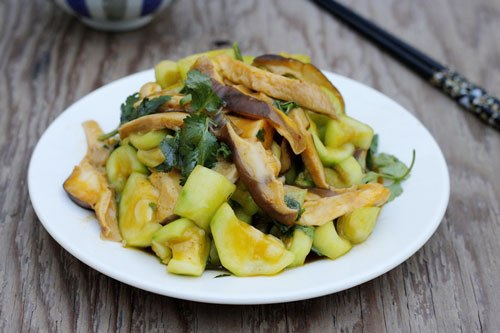

Nguyên liệu:
- 1 quả mướp hương hay mướp khía
- 200g nấm, có thể dùng nấm rơm hay nấm thủy tiên
- Muối, hành lá, rau mùi, nước mắm, hạt nêm.
Cách làm:
Bước 1:
- Nấm rửa sạch, cắt bỏ bớt chân, ngâm nấm vào âu nước muối pha loãng khoảng 10 phút, sau đó vớt ra rửa lại cho thật sạch.
Bước 2:
- Dùng dao thái nấm thành từng lát mỏng vừa ăn.
Bước 3:
- Mướp gọt bỏ vỏ, rửa sạch, thái lát vừa ăn.
Bước 4:
- Đun nóng một ít dầu ăn ở nồi, phi hành khô thơm, cho nấm vào xào chín, nêm vào nấm một ít muối, xào khoảng 7-10 phút.
Bước 5:
- Cho mướp vào xào cùng, nêm gia vị vừa ăn, xào đến khi mướp chín.
Bước 6:
- Tắt bếp, thêm hành lá, rau mùi thái nhỏ vào, múc ra đĩa dùng làm món xào ăn với cơm.